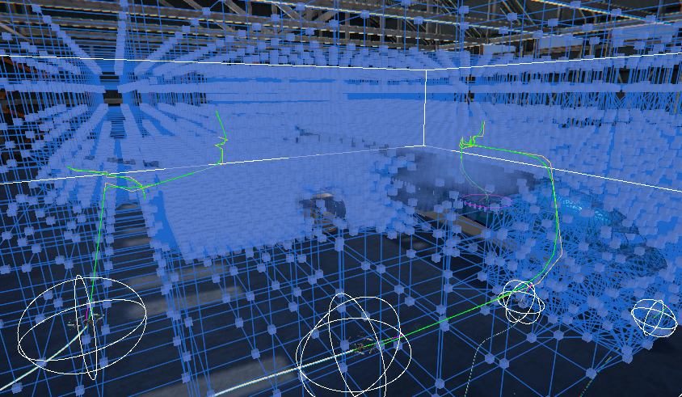
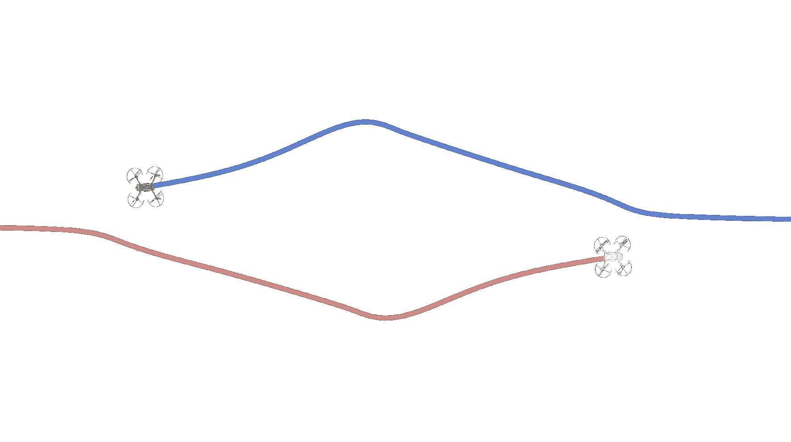
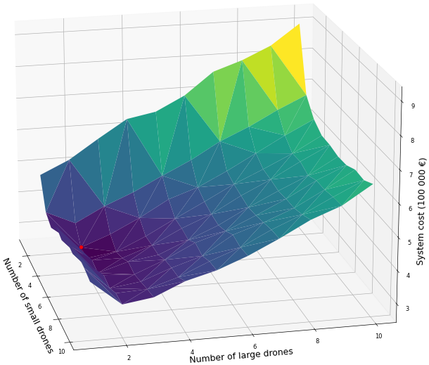

Summary
As my graduation project for the aerospace bachelor, I worked on a project with a team of Aerospace students to develop a swarm of inspection drones for aircraft inspection. I was responsible for simulating the inspection performed by the drones, which included full 6DOF drone kinematics, outer loop drone control, drone camera simulations, pathfinding, and collision avoidance. The project was awarded the 2500 euro NLF Aerospace WO Technical Award and we are continuing to work on the project outisde of our studies.
The main strong point of the simulations and algorithms we implemented were their flexibility. Although the project was focused on aircraft inspection, the algorithms we used were designed to be as general as possible, so the simulation could be used for the inspection of any 3D object, such as a wind turbine, rocket or a bridge.


One of the challenges we faced was determining the optimal locations where the drones would take pictures. We solved this optimization problem using two intertwined algorithms. The first algorithm distributed the global locations of the pictures around the aircraft, and the second fine-tuned the specific position and angle of each picture.

Another challenge was distributing the picture locations among the drones to minimize inspection time. This is known as the Multiple Traveling Salesmen Problem (MTSP), and we solved it using a real-time greedy algorithm and a global genetic algorithm. We then used A* on a 3D graph to construct the routes between the generated waypoints.
Finally, we implemented an Optimal Reciprocal Collision Avoidance (ORCA) system for the drones to avoid collisions with each other and any obstacles in their environment. The ORCA system was able to resolve conflicts in real-time and allowed the drones to move safely around the aircraft and the observer.
Overall, the project was a fun experience with a great team and allowed me to apply my knowledge of drone kinematics, control, optimization and pathfinding to a real-world problem. The final simulation, which can be viewed in Virtual Reality, shows the inspection being performed by the drones and their real-time collision avoidance.
More details
I will now walk through the most interesting parts of the simulation in greater detail, touching on the most interesting and challenging parts. First, I will discuss the task distrubution over the drones and the pathfinding algorithms used to guide them. Then, I will discuss the collision avoidance system and the drone control. Finally, I will discuss some specific details about the simulation itself.
Generating the picture positions
Starting from the 3D model of the aircraft that has to be inspected, it has to be determined how the drones will inspect this aircraft. First, it must be determined which drones will take pictures at which locations. In distributing these picture locations, the number of pictures and the overlap between the pictures has to be minimised while keeping the coverage of the aircraft as large as possible. This problem is further complicated because there are two drone types with different camera types with different properties. These properties, such as the resolution and gimbal limits, constrain the allowed picture positions.
This distribution problem was solved using two intertwined algorithms, one which distributes the global locations of the pictures around the aircraft and one which fine-tunes the specific position and angle of just one picture. The global algorithm performs multiple iterative sweeps of the aircraft, during which the local algorithm optimises a mathematical scoring function using a greedy algorithm. The score of a given picture position takes into account how much of the surface is covered, the overlap with other pictures, the angle to the normal of the surface etc.
The resulting distribution around a Boeing 757 can be seen below. The green dots indicate picture positions for a larger drone type (which has a downward gimballing camera), while the blue dots indicate picture positions for a smaller drone with an upward gimballing camera.

Drone routing
The next problem is distributing these picture locations over the drones while minimising the inspection time. This problem is known as a Multiple Traveling Salesmen Problem (MTSP). Due to the project's time constraints, the simulation was performed using a real-time greedy algorithm on the drones. This algorithm considered factors such as the drone density at a given picture position, the distance to the picture and how closely the camera was already gimballed to that desired picture position
With the waypoints the drones have to reach now known, the routes between those points were constructed using a simple A* algorithm on a 3D graph (shoutout to Aron Granberg's amazing 2D A* pathfinding project on which this code is based). The (simplified) graph and the resulting drone paths are shown in the picture below:
This pathfinding does not take into account the possible collisions between the drones. This was an explicit choice in the design process. Due to the time constraints of the project, it was chosen not to implement an integrated method such as Conflict Based Search (CBS). The collision avoidance system between the drones was implemented as a separate system, which is purely responsible for conflict resolution. As discussed in the next section, this lead to great results.
Drone collision avoidance
Optimal Reciprocal Collision Avoidance (ORCA) was chosen as the collision avoidance system for the drones. This is a very powerful and intuitive algorithm, and I had great fun implementing it and playing with it.
The main advantage of ORCA is that it is entirely decentralized, so no communication is required between the drones. The algorithm also scales very well with an increasing number of agents and is computationally cheap. The algorithm works with Velocity Obstacles (VO) which are forbidden regions in the velocity space where the drones cannot place their relative velocities. In the pictures below, you can see those forbidden velocity spaces visualised in the simulation as cones. If you doubt whether this algorithm would work in real life, it has been experimentally validated in the literature on real drones in real-time using just camera sensors (3-D Reciprocal Collision Avoidance on Physical Quadrotor Helicopters with On-Board Sensing for Relative Positioning) In implementing this algorithm for the simulation, I used (to the best of my knowledge) two novel solutions to make the algorithm simpler to implement and computationally cheaper. The algorithm as implemented can make the drones avoid collisions both with complex stationary objects and with other drones. The static object avoidance surprised me with its power in letting the drone navigate tight spaces, as is shown in the next section.
The following video shows the decentralised collision avoidance of 40 drones trying to cross a circle (note the emergent symmetries).
Drone quaternion control
To control the drones, I implemented a bunch of PID controllers where the most interesting thing is the attitude controller. The drones are modelled down to the forces and torques acting on them. To control the attitude of the drone on the torque level, I implemented a quaternion controller. I chose quaternions because, honestly, I just really dislike Euler angles. The power of this quaternion controller in conjunction with ORCA is shown in the following video. The emergent behaviour shown here is just so exciting to me. The only inputs to the drones are that the large drone wants to stay as close to a waypoint on the aircraft while the small drones are trying to get on the large drone's position. The resulting behaviour is just so exciting, the small drones circling each other (while not colliding), diving in between the hangar beams and then the large drone diving almost vertically to the ground. When the small drones provided space for each other to pull out of their respective dives at the end of the video, I knew this was a truly powerful algorithm.
Unity simulation
All the elements discussed previously were implemented in Unity. I chose to implement the simulation in the Unity High Definition Rendering Pipeline (HDRP). While this was a tremendous pain to get working correctly, the end result more than made up for that. One of the features made possible using the HDRP was the projection of the pictures taken by the drones onto the mesh of the aircraft. Besides this HDRP has also come a long way in performance for VR and now runs smoothly on a laptop RTX 2080.
Another function of the Unity simulation is headless running, where the simulation is executed without rendering. We ran thousands of headless simulations on our laptops, checking the reliability of the system and the variance of performance variables over multiple inspections. Furthermore, these simulations also allowed us to investigate not just the performance of a single swarm configuration but to explore a large set of permutations of possible swarm combinations:
My experience working on this project
Working on the simulation and the DSE as a whole has been an extremely enjoyable experience. I am very grateful for our amazing team and mentors. It was also very motivating to recieve so much enthousiasm and recognition for the project. Below are some pictures from our presentation at the Development Center for Maintenance of Composites (DCMC) and the NLF award ceremony.